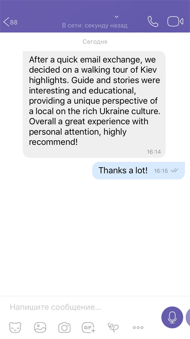

<section class="what-others-say">
    <div class="container">
        <h2 class="wos-header-section">See what others say</h2>
        <div class="photo-speach-container" id="photo-speach">
            
            
            
            <div class="speach-flex-row">
                <i id="left-arrow" class="fas fa-chevron-left arrow-icon"></i>
                <div class="speach-flex-column">
                    <div class="people-speach">
                        <h3 class="people-full-name">diego maro, <span class="people-country">italy</span></h3>
                        <p class="people-speach-item">«After a quick email exchange, we decided on a walking tour of Kiev highlights.
                            Guide and stories were interesting and educational,
                            providing a unique perspective of a local on the rich Ukranian culture.
                            Overall a great experience with personal attention; highly recommend!»
                        </p>
                    </div>
                    <div class="people-speach people-speach-fade" hidden>
                        <h3 class="people-full-name">kate ivanova, <span class="people-country">russia</span></h3>
                        <p class="people-speach-item"> Pulvinar odio eget aliquam facilisis.
                            Integer dignissim, augue tempus ultricies luctus, quam dui laoreet sem, non dictum odio nisi quis massa.
                            Morbi pulvinar odio eget aliquam facilisis. Morbi pulvinar odio eget aliquam facilisis.
                            Morbi pulvinar odio eget aliquam facilisis.
                            Morbi pulvinar odio eget aliquam facilisis.
                            Morbi pulvinar odio eget aliquam facilisis.
                            Morbi pulvinar odio eget aliquam facilisis.
                        </p>
                    </div>
                    <div class="people-speach people-speach-fade" hidden>
                        <h3 class="people-full-name">mel chu, <span class="people-country">china</span></h3>
                        <p class="people-speach-item"> Odio eget aliquam facilisis.
                            Integer dignissim, augue tempus ultricies luctus, quam dui laoreet sem, non dictum odio nisi quis massa.
                            Morbi pulvinar odio eget aliquam facilisis. Morbi pulvinar odio eget aliquam facilisis.
                            Morbi pulvinar odio eget aliquam facilisis.
                        </p>
                    </div>
                    <p class="whatsapp-btn" id="whatsapp-btn">see in origin from <span class="whatsapp-btn">whatsapp</span></p>
                </div>
                <i id="right-arrow" class="fas fa-chevron-right arrow-icon"></i>
            </div>
        </div>
        <div class="whatsapp-block" id="whatsapp-block" hidden>
            <div class="whatsapp-block-flex">
                <i class="close-icon fas fa-times" id="close-icon"></i>
                <i id="left-arrow-screen" class="fas fa-chevron-left arrow-icon arrow-icon-screen"></i>
                
                
                
                <i id="right-arrow-screen" class="fas fa-chevron-right arrow-icon arrow-icon-screen"></i>
            </div>
        </div>
        <div class="wos-dots" hidden>
        </div>
        <div class="overlay-screen" hidden id="overlay"></div>
    </div>
</section>